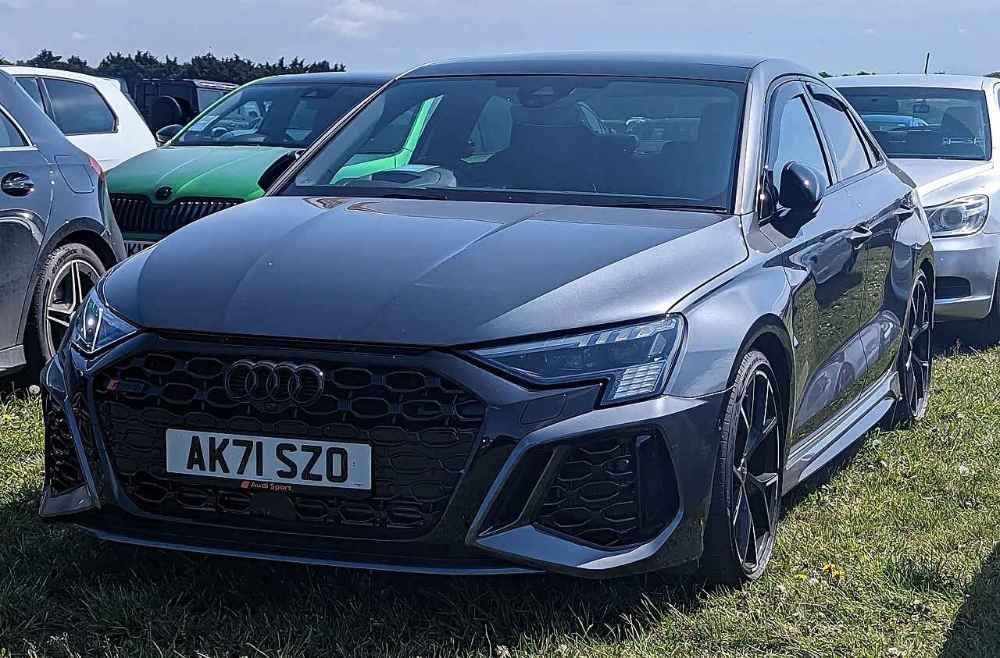
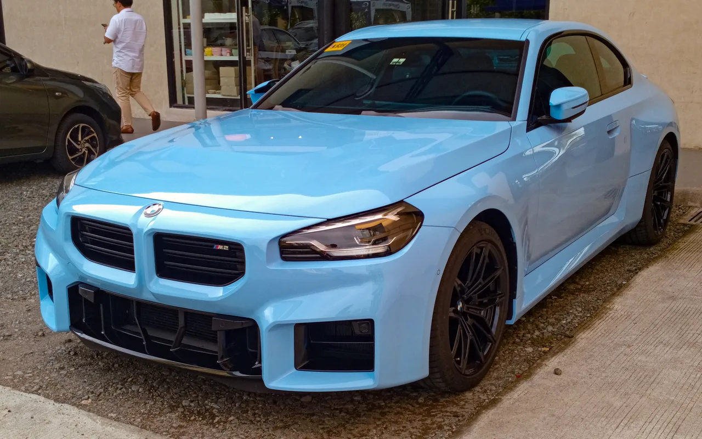

▲ 아우디 RS3 살룬. 2.5L 5기통 터보 엔진으로 394마력을 낸다 ⓒ Land Rover Series 3, Wikimedia Commons (CC0)
미국 자동차 매체 카버즈(CarBuzz)에 따르면 아우디 RS3에 탑재된 2.5리터 터보 5기통 엔진은 리터당 157.6마력이라는 전력밀도로 양산 엔진 중 최고 수준을 자랑한다. 이 엔진으로 394마력을 내며 0-60mph를 3.6초에 주파하는데, 이런 성능을 가진 차의 신차 가격이 6만 6,100달러(약 8,990만 원)로 혼다 시빅 타입R보다 오히려 저렴하다는 점이 화제다.
| 구분 | 달러 | 원화 환산 |
|---|---|---|
| 신차 가격 | $66,100 | 약 8,990만 원 |
| 5년 유지비 | $3,257 | 약 443만 원 |
| 중고가(2017년형) | $31,000~$41,000 | 약 4,216만~5,576만 원 |
1. 5기통이라는 희소성 — 왜 밀도가 이렇게 높을까
요즘 고성능 소형차 시장은 대부분 4기통 터보 엔진으로 통일돼 있다. 아우디가 굳이 5기통 구조를 고집하는 이유는 독특한 배기음과 아우디 콰트로 랠리카 시절부터 이어진 브랜드 헤리티지 때문이라는 평가가 많다. 실린더 하나를 더한 구조에서 정교한 터보차저 세팅으로 리터당 157.6마력이라는 밀도를 뽑아냈다는 점이, 이 엔진이 단순한 마케팅용 희소성을 넘어 실제 기술적 성취로 평가받는 이유다.
2. 신차도 중고도 — 왜 가성비가 좋다고 하나

▲ 아우디 RS3 보어스프룽. 최상위 트림으로 콰트로 사륜구동과 5기통 엔진을 함께 갖췄다 ⓒ Calreyn88, Wikimedia Commons (CC BY-SA 4.0)
394마력, 0-60mph 3.6초급 성능의 신차가 6만 6,100달러(약 8,990만 원)라면, 동급 고성능차 시장에서는 오히려 저렴한 축에 속한다는 것이 매체의 평가다. 여기에 5년간 유지비도 약 3,257달러(약 443만 원) 수준으로 합리적인 편이라, 초기 구매 비용과 보유 비용 모두에서 부담이 크지 않다. 중고 시장에서는 2017년형 기준 3만 1,000~4만 1,000달러대(약 4,216만~5,576만 원)에 거래되고 있어, 신차 대비 예산을 낮추고 싶은 구매자에게도 선택지가 넓다.
콰트로 사륜구동 시스템이 기본 탑재된다는 점도 가성비를 뒷받침하는 요소다. 경쟁 모델들이 사륜구동을 상위 트림 옵션으로만 제공하는 경우가 많은 것과 달리, RS3는 전 트림에 걸쳐 사륜구동을 기본으로 갖춰 우천·설원 등 다양한 노면 조건에서도 안정적인 접지력을 제공한다.
3. BMW M2·AMG A45 S와 비교하면 어디에 설까

▲ BMW M2. 후륜구동 특유의 다이내믹한 코너링으로 RS3와 자주 비교되는 경쟁 모델이다 ⓒ Ethan Llamas, Wikimedia Commons (CC BY-SA 4.0)
독일 프리미엄 브랜드 고성능 소형차 시장에서 RS3의 경쟁자로는 BMW M2, 메르세데스-AMG A45 S가 꼽힌다. M2는 후륜구동 특유의 다이내믹한 코너링을, A45 S는 421마력의 더 강력한 4기통 터보 출력을 내세운다. RS3는 이들 대비 마력에서는 다소 밀리지만, 콰트로 사륜구동을 기본 탑재해 일상적인 험로·우천 주행에서의 안정성은 오히려 앞선다는 평가를 받는다. 결국 순수 코너링 재미를 원하면 M2, 최고 출력을 원하면 A45 S, 사계절 안정성과 5기통 감성을 원하면 RS3라는 삼파전 구도가 형성된다.
4. 콰트로 랠리의 후예 — 5기통이 갖는 상징성
아우디의 5기통 엔진은 단순한 기술적 선택을 넘어 브랜드 헤리티지와 직결된다. 1980년대 콰트로 랠리카 시절부터 이어진 5기통 사운드는 아우디 스포츠 모델의 정체성 그 자체로 여겨져 왔다. 4기통으로 통일된 경쟁사들 사이에서 RS3가 굳이 원가 부담을 감수하면서도 5기통을 유지하는 이유는, 이 독특한 배기음과 헤리티지가 브랜드 팬층에게 갖는 상징적 가치가 크기 때문이라는 분석이다.
5. 정리 — 가성비와 헤리티지를 동시에
RS3는 최고 출력 경쟁에서는 한 발 물러서 있지만, 리터당 마력 밀도·사륜구동 기본화·5기통 헤리티지라는 세 가지 요소를 조합해 독자적인 포지션을 구축했다. 여기에 시빅 타입R보다 저렴한 가격까지 더해지며, 고성능 소형차를 찾는 구매자에게 실질적인 가성비 대안으로 자리잡고 있다는 평가다.